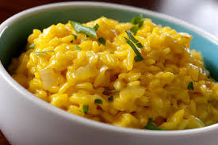
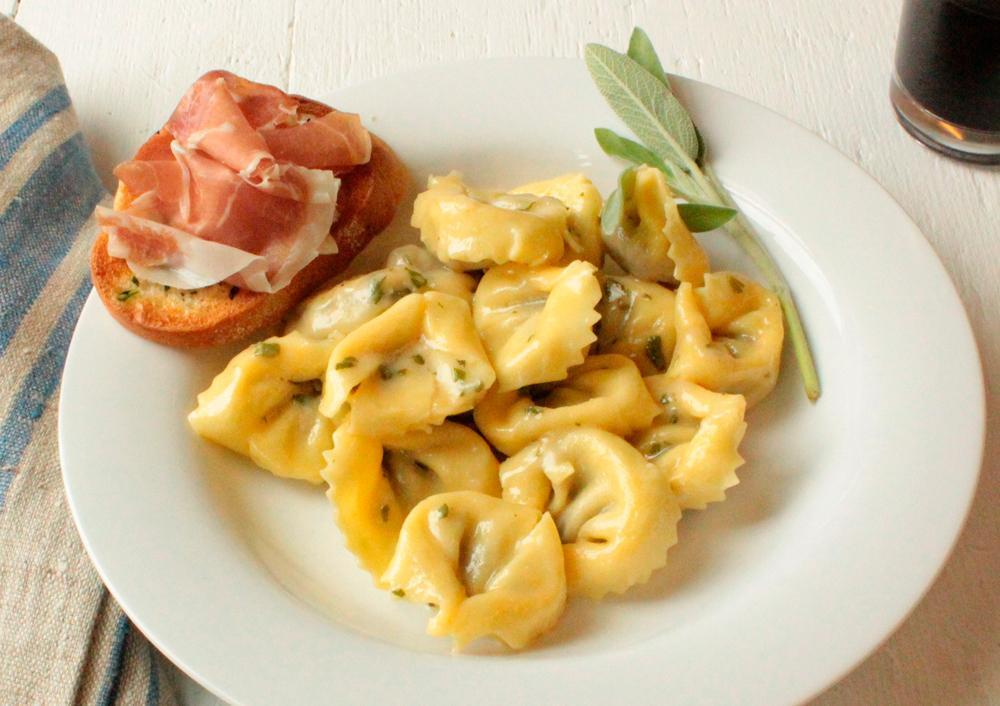

Com anos de tradição no preparo de comidas típicamente italianas, com os mais diversos
pratos,
oferecemos
uma experiência gastronômica única.
RAVIOLLI
Os ravioli nasceram na Ilha da Sicília, berço de tantas outras delícias da culinária italiana. A palavra raviolo, singular de ravioli, vem do latim graviolo, que significa cheio, pesado. Mas como nos dialetos falados na ilha é costume comer os "g" antes dos "r" , graviolo se tornou raviolo.
A primeira menção de ravioli aparece nos escritos de Francesco di Marco Datini, um mercador de Veneza, no século 14.Em um manuscrito veneziano que tinha uma receita de ravioli consistindo de ervas verdes misturadas com ovo batido e queijo fresco, que era cozido no caldo de carne - uma forma muito tradicional de comer ravioli (al brodo) que ainda é visto até hoje.
No princípio, não eram utilizados recheios. Os ravióli não passavam de círculos ou retângulos de massas tipo lasagna que eram colocados em caldos e sopas ou fritos em azeite de olivas, com alho e especiarias. O recheio passou a ser adotado entre os séculos 12 e 13. Ovos, queijo, ricota e ervas eram os principais. Ao norte da Itália, entraram nos recheios carnes em geral. De acordo com a tradição, os raviolli deveriam ter formatos quadrados ou retangulares. Contudo, hoje são produzidos em diferentes desenhos, pesos, dimensões e quem os saboreia não se importa com um detalhe tão pequeno.

RISOTTO
O risoto é um prato altamente apreciado na gastronomia atual, um sucesso e quase uma unanimidade. Ele pode ser servido como entrada ou prato principal, acompanhando um bom vinho, de preferência. De origem italiana, a palavra risotto significa, literalmente, "pequeno arroz" ou 'arrozinho".
Segundo alguns historiadores, o prato teria surgido na região da Lombardia, norte da Itélia, no século XI, quando o sul do país era dominado pelos Sarracenos (uma das formas usadas pelos cristãos da Idade Média para designarem genericamente os árabes ou os muçulmanos), povo que introduziu o grão utilizado na preparação. A partir da Sicília, o produto tomou o rumo norte da Itália.
A receita mais famosa, porém, teria surgido apenas século XVI, em Milão, pelo mestre Valório de Fiandra, responsável pelos vitrais da catedral de Milçao. Conta-se que, por ciúmes da filha que iria se casar, Valório teria deixado cair açafrão é corante muito utilizado em suas obras de arte é no risoto durante os preparativos do casamento. A intenção, que era de estragar a receita, acabou tendo grande aceitação pelos convidados e nascia, naquele momento, o Risotto alla Milanese.
Receitas de risoto:
Vindo diretamente da Itália, o risoto tradicional é feito com arroz arbóreo. Diferente do arroz branco, seu modo de preparo requer um certo tempo para ele ficar cremosíssimo e no ponto certo. Sua base é feita sobre cebola e alho fritos na manteiga e no azeite onde vai se acrescentando caldo até chegar ao ponto ideal. O risotto bianco, também conhecido como risoto básico, é preparado com caldo de legumes, vinho branco, manteiga e queijo parmesão ralado. Pode ser utilizado como base para o preparo de outras variações do prato. O risoto de camarão é um dos mais conhecidos. Em geral, as pessoas apenas acrescentam o crustáceo ao final do preparo do risoto base para prepará-lo.Porém, para adicionar o sabor do fruto do mar, o ideal é acrescentar ao preparo do caldo de legumes partes do camarão como cascas, cabeças e outro restos do camarão, pois são carregados de sabor. Outra variação muito apreciada é o risoto funghi (cogumelos secos).
Para este prato, uma dica é hidratar os cogumelos em água quente por cerca de 30 minutos antes de colocá-lo na panela. Aproveite e utilize essa água para completar seu caldo base. Apreciado pelos adeptos da dieta vegana, o risoto de legumes também tem grande aceitação. As combinações podem variar ingredientes como cenoura, vagem, pimentão, alho-poró, berinjela, abobrinha entre outros. Para adaptar a receita para dietas sem ingredientes de origem animal, basta utilizar manteiga vegetal ou azeite e retirar o queijo.
PIZZA
Uma comida similar foi preparada primeiro na era Neolítica. Os nomes variavam. Mas uma massa assada com diferentes toppings já era encontrada pelo mundo desde aquela época. Entretanto, foi em Nápoles que a primeira pizza de verdade foi preparada, nos anos de 1600. A ideia é que fosse vendido para que as pessoas comprassem suas fatias e comessem por seus caminhos. O que levou a uma mudança nos hábitos alimentares dos italianos.
A popularidade aumentou quando alguns membros da realeza se apaixonaram pela pizza. Os responsáveis foram o Rei Umberto I e a Rainha Margherita, enquanto eles visitavam a cidade de Nápoles em 1889. Eles queriam conhecer a culinária local. Foi então que o pizzaiolo Raffaele Esposito preparou três opções diferentes. Uma delas feita com molho de tomate, muçarela e manjericão é para homenagear a bandeira italiana. A rainha ficou encantada, por este motivo que este sabor de pizza recebe o seu nome.
LASAGNA
O nome lasagna vem do latino lagana, palavra utilizada ainda hoje em certas regiões da Itália para denominar as placas produzidas com farinha de trigo e água, vinho ou ovos. No início, a massa era aberta com um rolo de madeira chamado laganaturum, ou "lasanhador".
A massa era cortada em formas de quadrados ou losangos e cozidas em caldos de carne ou de vegetais. Existem três teorias sobre a origem da lasanha, duas das quais denotam um prato grego antigo. A principal teoria é que lasanha vem do grego λ?γανον (laganon), uma folha plana de massa de macarrão cortada em tiras. A palavra λαγ?να (Lagana) ainda é usado em grego para significar um tipo fino e plano de pão sem fermento. Outra teoria diz que a palavra lasanha vem do grego λ?σανα (Lasana) ou λ?σανον (lasanon). Os romanos teriam assimilado a palavra como "lasanum", que significa "panela" em latim. Os italianos usaram a palavra para se referir ao prato em que lasanha é feita. Mais tarde, o nome do alimento assumiu o nome do prato. Uma terceira teoria propõe que ela foi inspirada a partir de uma receita inglesa desenvolvida no século 14.
Como descrito em “Forme of Cury”, um livro que contém uma vasta coleção de receitas em uso durante o reinado de Ricardo II, o prato "Loseyn" tem semelhanças com a lasanha moderna, tanto na receita, que apresenta uma sobreposição de ingredientes entre as folhas de massa, quanto no seu nome. No entanto, uma diferença importante é a falta de tomates, que ainda não estavam disponíveis na Europa antes de Colombo chegar à América.
Mas sem a prova concreta da origem do prato, cozinheiros constituem sua invenção à Itália do século 16. Na cidade de Bologna, cozinheiros construíram um prato em que as lasagna eram colocadas em camadas levando recheio entre uma e outra. Esse recheio, chamado balsamella, era composto de manteiga, farinha, leite e especiarias, como a noz-moscada.
Por volta de 1720, na região da Sicília, as mulheres de pescadores e carreteiros realizam uma nova combinação: o ammogghiu trapanisi. Elas untavam uma vasilha com azeite e intercalavam uma camada da massa com uma mistura de tomates, sal, manjericão e anchovas ou atum. No fim do século 18, em Bologna, chefs criaram um tipo de massa esverdeada que continha espinafre e eram combinadas com um molho de carne moída, balsamella, e fatias de mozzarela entre cada lâmina da massa.

CAPPELETTI
A massa foi desenvolvida no século 12, no norte da Itália, em Emília-Romanha, cuja capital é Bolonha. Cappeletti significa “pequeno chapéu” e recebeu este nome porque seu formato se parecia com os chapéus medievais, em italiano “capellos”. Os cappeletti surgiram como uma evolução dos ravioli. No século 13, os ravioli já encantavam os nobres e os plebeus do norte da Itália.
Esses pasteizinhos com forma quadricular eram recheados com queijo ou com carne. Com o decorrer do tempo, após muitos enganos na hora de servi-los, passaram a diferenciar um recheio do outro através de formatos diferentes. Os de queijo mantiveram no forma quadricular. Já os de carne passaram a ter a forma de um triângulo, com uma de suas pontas retorcidas. Esta nova forma era semelhante a de um chapéu de bico, e daí veio o nome - cappeletti significa "chapeuzinhos" em italiano.
A tradição diz que os ravioli não podem ter carne em seu recheio, enquanto os cappeletti não utilizam queijo. Os cappeletti são tradicionalmente servidos em caldo, assim como o tortellini (a diferença entre os dois está no recheio). O tradicional jantar de Natal no norte da Itália começa com cappelletti em caldo Capon.